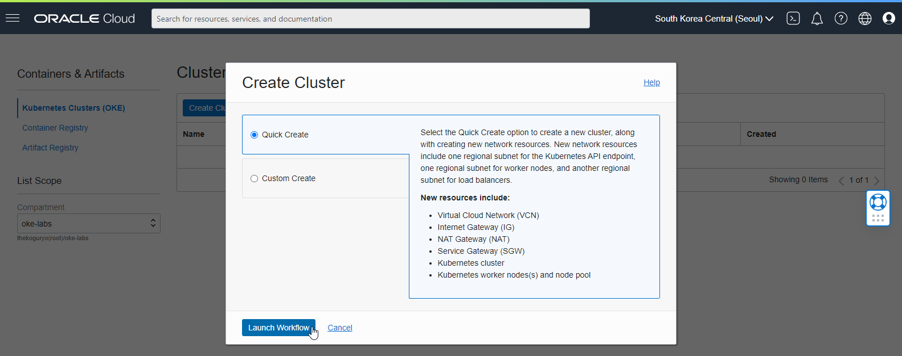
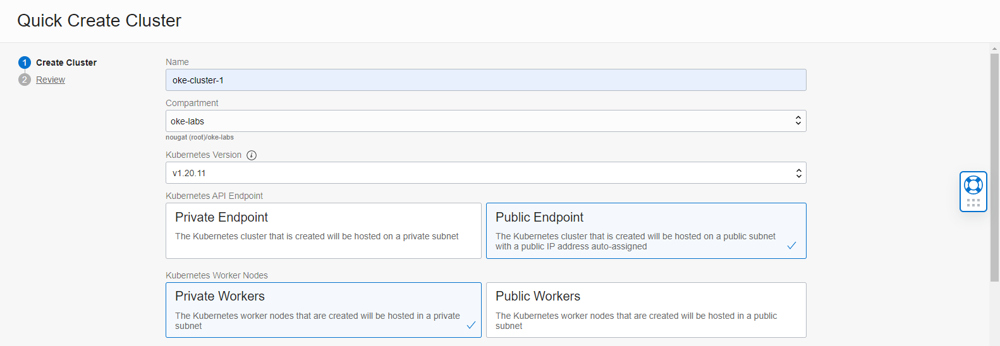
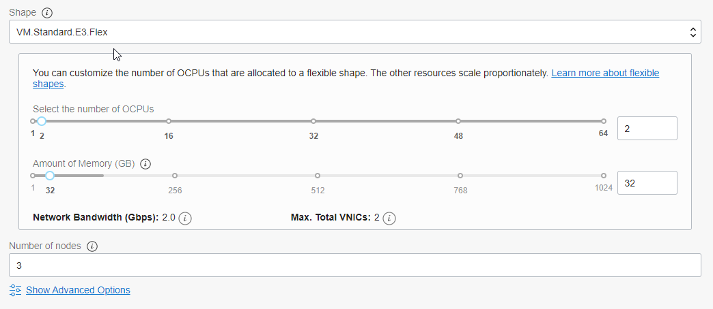
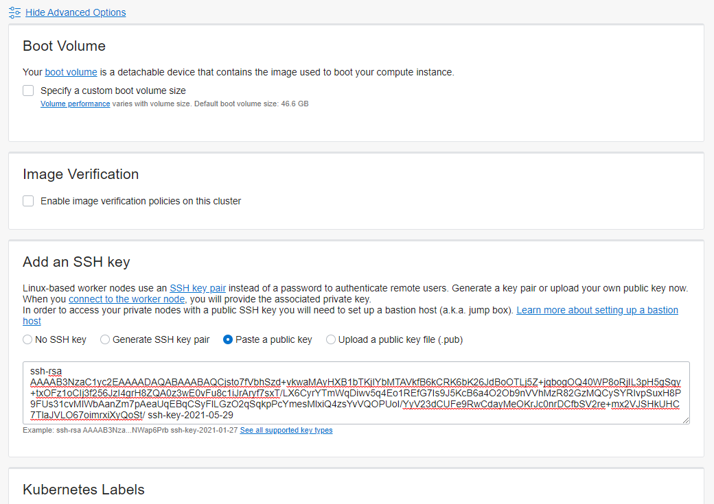
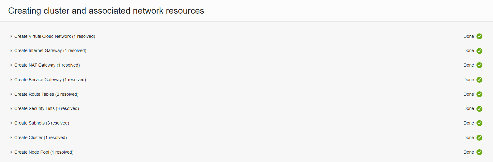
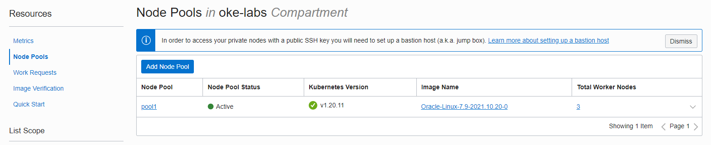
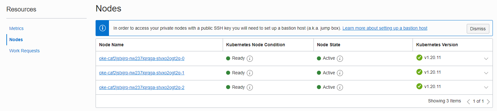

2. OKE 클러스터 만들기
Quick 모드로 클러스터 만들기
처음 OKE 클러스터를 만드는 단계로 실환경에서는 별도의 OKE 사용자 및 VCN 등 커스텀한 환경을 사용하겠지만, OKE를 이해하기 위한 처음 단계로 Administrator 유저를 통해 Quick 모드로 설치합니다.
-
OCI 콘솔에 로그인합니다.
-
좌측 상단 햄버거 메뉴에서 Developer Services > Containers & Artifacts > Kubernetes Clusters (OKE)로 이동합니다.
-
List Scope에서 생성할 Compartment(예, oke-labs)를 선택합니다.
-
클러스터 생성을 위해 Create Cluster 버튼을 클릭합니다.
-
빠른 클러스터 생성을 위해 기본선택된 Quick Create 모드를 이용하여생성된 OKE 클러스터를 통해 기분 구조를 이해하고자 합니다. 아래 Launch Workflow를 클릭합니다.

클러스터 생성 옵션
-
생성할 클러스터 이름을 입력합니다. 예, oke-cluster-1
-
설치될 Compartment를 선택합니다. 예, oke-labs
-
클러스터의 쿠버네티스 버전을 선택합니다. 예, v1.20.11
-
Kubernete API Endpoint
- Public API로 접속할 수 있게 기본 선택된 Public Endpoint를 그대로 사용
- Kubernetes API를 Private IP로 오픈할지, Public IP로 오픈 할지를 선택할 지를 선택합니다. Quick Create로 설치하게 되면, 선택에 따라 Kubernetes API가 위치하는 서브넷이 Private Subnet 또는 Public Subnet으로 설정될 지가 정해집니다.
-
Kubernetes Worker Nodes
- Worker Nodes를 접속할 수 있는 방법을 선택합니다. 기본 선택된 Private Worker를 그대로 사용
- 생성되는 Worker Nodes를 Private IP로 오픈할지, Public IP로 오픈 할지를 선택할 지를 선택합니다. Quick Create로 설치하게 되면, 선택에 따라 Worker Nodes가 위치하는 서브넷이 Private Subnet 또는 Public Subnet으로 설정될 지가 정해집니다.

-
Shape Worker Node로 사용할 VM Shape를 지정합니다. 기본 선택된 Flex Shape에서 필요에 따라 OCPU, Memory를 조정합니다.

-
Number of nodes
Worker Nodes 갯수를 지정합니다. 기본 값을 3개입니다.
-
Control Planes(Master Nodes)
Control Plane은 OCI가 관리하는 영역으로 별도 크기 등을 지정하지 못하며, 기본적으로 다중화되어 있습니다.
-
Advanced Options
- Add an SSH Key
- 트러블 슈팅 등을 위해 Worker Node VM에 접근하기 위해서는 SSH Key 등록이 필요합니다. 사용할 SSH Key의 Public Key를 아래와 같이 등록합니다.

- Add an SSH Key
-
클러스터 생성 정보를 모두 입력하였습니다. 아래 Next를 클릭
-
앞서 입력한 값들을 리뷰한 후 Create Cluster를 클릭합니다.
-
클러스터 생성 및 관련 네트워크 자원
아래 그림과 같이 Quick Create로 클러스터를 생성시 기본 네트워크 자원이 함께 생성되는 것을 볼수 있습니다.

클러스터 생성 확인
-
생성이 요청되면, 클러스터 생성, 노드 풀 생성, Worker Node 생성 및 구성 순으로 진행됩니다.
-
클러스터 상세정보에서 Resources > Node Pools를 보면 생성된 pool을 볼수 있습니다.

-
생성된 Node Pool인 pool1을 클릭하여 Node Pool 상세 정보로 이동합니다.
-
Node Pool 상세 정보에서 Resources > Nodes 정보를 보면 생성된 Worker Nodes를 확인할 수 있습니다. VM 생성후 쿠버네티스 구성 시간이 있어 Ready 상태가 될 때까지 약간의 시간이 걸립니다. 테스트 환경에서는 노드가 모두 Ready 될때 까지 5~6분 정도 걸렸습니다.

클러스터 및 네트워크 구성 확인
Quick Create & Public Endpoint & Private Workers
Example Network Resource Configurations에 설명된 예시 처럼 Kubernetes API Endpoint, Worker Nodes, Service Load Balancer에 대해서 Private 또는 Public 서브넷을 조합하는 몇 가지 구성이 가능합니다. 여기서는 앞서 처럼 Quick Create 모드에서 Public Endpoint, Private Workers를 선택하였고, Service Load Balancer는 기본 생성시는 Public이며 Kubernetes에서 Load Balancer 생성시 선택할 수 있습니다.
** 이 글은 개인으로서, 개인의 시간을 할애하여 작성된 글입니다. 글의 내용에 오류가 있을 수 있으며, 글 속의 의견은 개인적인 의견입니다. **